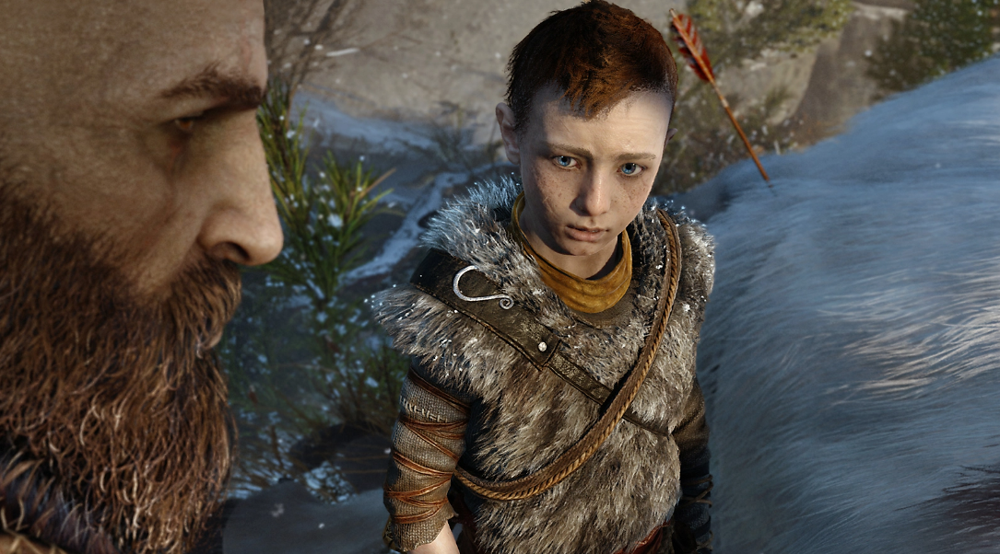
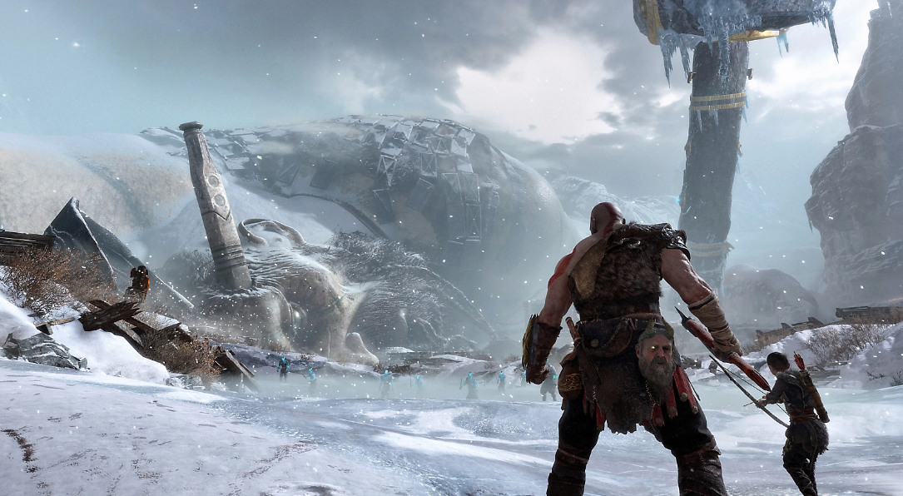
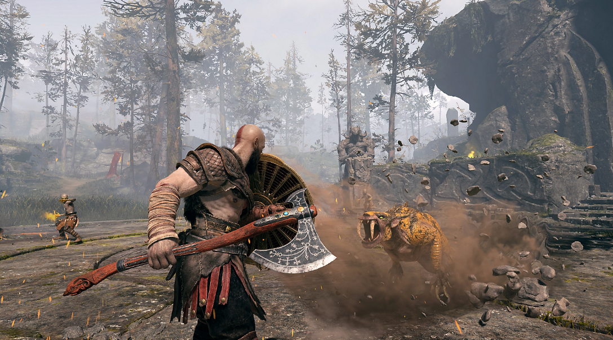
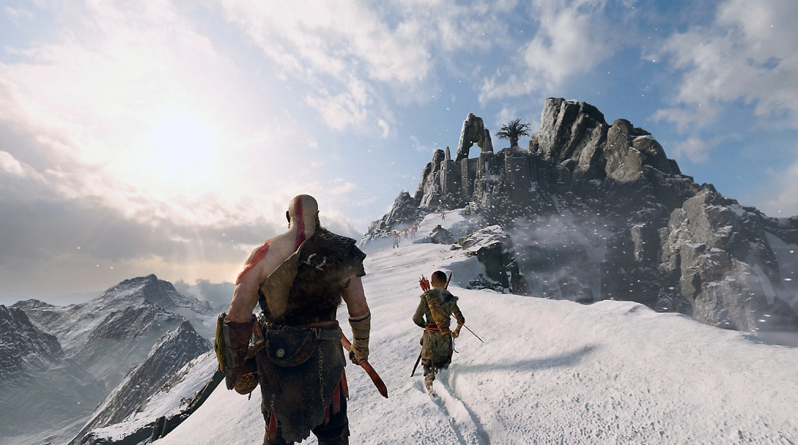

Una odisea fantástica

 
Desde el mármol y las columnas que adornan el Olimpo hasta los bosques,
las montañas y las cuevas del mundo nórdico anterior a los vikingos, este es un reino
claramente nuevo con su propio panteón de criaturas, monstruos y dioses.
exploración de god of war
La aventura para redimir a Kratos
Ahora, mientras vive como un hombre fuera de la sombra de los dioses,
Kratos debe adaptarse a tierras desconocidas, a amenazas inesperadas y a una segunda
oportunidad de ser padre. Junto con su hijo Atreus, se aventurarán en las brutales
tierras salvajes nórdicas y lucharán para cumplir una misión sumamente personal.

Escenas:
Triler